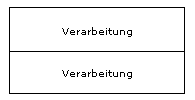

Überblick und Lernziele
In dieser ersten Lerneinheit des Moduls Programmieren II wiederholen wir zunächst kurz die wesentlichen Inhalte aus dem Modul Programmieren I. Programmierkenntnisse in der objektorientierten Programmiersprache Java und entsprechende Programmierfertigkeiten aus Programmieren I sind die Voraussetzung für die Bearbeitung des Moduls Programmieren II. In diesem Modul wird die Java Version SE7 oder höher verwendet. Außerdem wird in dieser Lerneinheit in die integrierte Entwicklungsumgebung Eclipse anhand eines Programmbeispiels eingeführt.
Lernziele
-
Die Kenntnisse aus dem Kurs Programmieren I werden aufgefrischt.
-
Sie können Eclipse zum Editieren, Übersetzen und Ausführen von Java-Programmen benutzen.
-
Sie können die wesentlichen Fenster von Eclipse, in Bezug auf deren Funktionalität, erklären.

Gliederung
- Was Sie beherrschen
In diesem Kapitel werden stichpunktartig die Inhalte aus dem Modul Programmieren I wiederholt, welche die Voraussetzung für die Bearbeitung des Moduls Programmieren II sind: Übersetzung und Ausführung von Java-Programmen, Programmierung von Klassen und Objekten sowie Attributen und Methoden, Konzepte von Vererbung und Paketen.
- Einführung in Eclipse
Die Arbeitsschritte in der integrierten Entwicklungsumgebung Eclipse zum Laden, Editieren, Übersetzen und Ausführen des bereits bekannten Taschenrechner-Programms aus der Lerneinheit 09 im Modul Programmieren I werden Schritt für Schritt erklärt.
Zeitbedarf
Für die Bearbeitung dieser Lerneinheit benötigen Sie etwa 120 Minuten zuzüglich der Zeit, die Sie für die Bearbeitung der Tutorien von Eclipse aufwenden.
1 Was Sie beherrschen
Das Modul Grundlagen der Programmierung II baut auf dem Wissen und den Programmierfertigkeiten aus dem Modul Grundlagen der Programmierung I auf. Das heißt die Grundlagen der objektorientierten Programmierung in Java beherrschen Sie.
Zum Warmwerden
wollen wir in dieser Lerneinheit
einige wesentliche Inhalte kurz wiederholen. Die meisten
von Ihnen hatten das Modul Grundlagen der Programmierung I belegt und können
bei Bedarf zur Wiederholung die jeweilige Lerneinheit nochmals anschauen.
Übersicht Lerneinheiten Programmieren I

Die Links in der Abbildung sind nicht anklickbar.
1.1 Wie arbeitet die Programmiersprache Java?
Java-Programme werden, wie alle Programme einer höheren Programmiersprache (higher level programming language), in einer vom Menschen lesbaren Form nach den Regeln der Syntax und Semantik der jeweiligen Programmiersprache im Editor erfasst.
Computerprogramme werden vom Prozessor ausgeführt. Die meisten Programme werden zu diesem Zweck in Maschinensprache übersetzt – sie ist abhängig vom jeweiligen Computer und Betriebssystem. Um Plattformunabhängigkeit (platform independence) für Java-Programme zu erreichen, werden sie in einen Zwischencode, den Byte-Code übersetzt, der vom – für jede Plattform unterschiedlichen – Java-Interpreter, der sogenannten virtuellen Maschine (VM oder JVM) ausgeführt wird.
Die folgende Animation,
die Ihnen aus dem Studienmodul Grundlagen der Programmierung I
aus der Lerneinheit
PJA vom Abschnitt 2.2 bekannt ist, veranschaulicht diese Arbeitsweise:
Diashow (vgl. Programmieren I Lerneinheit PJA / Kap. 2)

Die Programmiersprache Java wurde für und mit dem Internet entwickelt. Aus der Client-Server-Struktur des Internets resultieren spezielle Programmtypen in Java. Das folgende Rolloverbild symbolisiert die Programmiersprache Java als mächtigen Strom, dessen Arme die verschiedenen Programmarten sind. Eine Beschreibung der Programmarten wird beim Überfahren mit der Maus sichtbar:
Rolloverbild
(vgl. Programmieren I
Lerneinheit PJA / Kap. 1)

1.2 Was sind Klassen in Java?
Die Klasse (Schlüsselwort class in Java) ist der zentrale Begriff in der objektorientierten Programmierung. In Klassen werden die vom Programm zu realisierenden Aufgabenstellungen modelliert. Jedes Programm besteht aus mindestens einer Klasse.
Klassen enthalten Attribute (fields) und Methoden. In den Methoden wird das Verhalten oder die Funktionalität der Klasse programmiert. Die Attribute dienen zur Beschreibung von Variablen, die verschiedene Werte im Programm speichern können.
Klassen sind typischerweise Beschreibungen, vorstellbar als Schablonen oder Baupläne, um Objekte zu erzeugen. Erst die Objekte existieren im Programm real und können benutzt werden.
Ein Objekt wird anhand einer Klasse mittels new-Operator und Konstruktor erzeugt. Diesen Vorgang bezeichnet man auch als Instanziieren oder Generieren:
meinObjekt = new Klasse();Schauen Sie sich die folgende Animation an, in der eine Klasse
als Objekt-Fabrik arbeitet
.
Animation

Diese Grundidee der objektorientierten Programmierung hört sich für Programmieranfänger zunächst umständlich an: Erst soll man eine Klasse programmieren, um davon ein Objekt zu erzeugen. Warum programmiert man nicht sofort ein Objekt?
Die Beziehung zwischen Klasse und Objekt ermöglicht die Wiederverwendbarkeit des Programmcodes:
- Von einer Klasse können mehrere, verschiedene Objekte
erzeugt werden.
- Objekte können von bereits ausprogrammierten Klassen
erzeugt werden, die oftmals von fremden Programmierern bereits implementiert
und in Paketen (packages) archiviert wurden.
- Zwischen Klassen können Vererbungshierarchien (depth of inheritance) aufgebaut werden. Beerbende Klassen erben die Komponenten der Superklasse.
1.3 Was für Arten von Datentypen gibt es?
In Java unterscheidet man zwei Arten von Datentypen:
- primitive Datentypen (primitive data types)
- referentielle Datentypen (reference data types)
Die primitiven Typen sind in Java vordefiniert und werden mit Hilfe von Schlüsselwörtern (keywords) deklariert:
primitive
Datentypen

Man bezeichnet sie auch als einfache oder atomare Datentypen.
Zeichenketten (string) gehören nicht zu den primitiven Typen. Solche komplexen Typen programmiert man in Java in Form von referentiellen Typen.
referentielle
Datentypen
Zwischen primitiven und referentiellen Typen gibt es eine Reihe von Unterschieden. Beispielsweise enthalten primitive Variablen ihre Daten selber, während referentielle Variablen auf Objekte verweisen, die die Daten enthalten.
1.4 Wie programmiert man Methoden und ruft diese auf?
Methoden beinhalten die Funktionalität eines Programms.
Die allgemeine Syntax einer Methodendeklaration lautet:
[Modifizierer] Typ Bezeichner([Parameter]) {
// Anweisungen
}Modifizierer (modifier) und Parameter müssen nicht in jedem Methodenkopf enthalten sein. Typ (data type), Bezeichner (identifier) und Klammerpaar (brackets) dagegen immer.
In Java muss in der Methodendeklaration der Typ des Rückgabewertes (return type) angeben werden. Eine Ausnahme bilden Methoden vom Typ void, die keinen Wert zurückgeben.
Das bekannteste Beispiel ist:
public static void main(String args[]) { }Methoden werden über ihren Bezeichner angesprochen. Sollen an eine Methode Werte zur weiteren Bearbeitung übergeben werden, dann sind Parameter im Methodenkopf (method header) anzuführen.
public float rundeFloat(float wert, int zahl)Die Methode rundeFloat gibt einen Wert vom Typ float zurück. Im Methodenrumpf (method body) muss demzufolge hinter dem Schlüsselwort return ein Ausdruck (expression) stehen, der denselben Typ hat wie der Rückgabewert (return value) im Methodenkopf. Dieser Wert wird als Ergebnis an die aufrufende Methode zurückgegeben.
In objektorientierten Sprachen können Objekt-Methoden nur über Ihre Objekte aufgerufen (invoke) werden. Der Punkt trennt Objektnamen und Methodenamen:
meinObjekt.eineMethode();Im Zusammenhang mit der Programmierung von Methoden unterscheidet man zwischen
- der Programmierung der Methode, d. h. die Methode wird deklariert und
- dem Aufruf der Methode, d. h. die Anweisungen der Methode sollen ausgeführt werden.
Erinnern Sie sich noch daran, was unter dem Mechanismus des Überladens (overload) von Methoden verstanden wird?
Wenn nicht, dann schauen Sie sich einfach noch einmal die
entsprechenden Kapitel in der Lerneinheit MET im Modul Grundlagen der Programmierung I
an.
1.5 Was für Kontrollstrukturen gibt es?
Kontrollstrukturen sind Anweisungen (statement), mit denen der Ablauf
eines Programms gesteuert werden kann. Das Wort Kontrollstruktur ist eigentlich eine falsche Übersetzung des engl. control structure (Steuerstruktur) hat sich jedoch als Standard durchgesetzt.
Wir unterscheiden:
- Sequenz (sequence)
Die Anweisungen werden nacheinander ausgeführt. - Selektion (Verzweigungen) (branching)
In Abhängigkeit von einer Bedingung werden verschiedene Programmzweige abgearbeitet. - Iteration (Schleife) (loop)
Anweisungen werden wiederholt abgearbeitet (Programmschleifen). - Ausnahmen (exceptions)
Beim Auftreten von Ausnahmesituationen werden bestimmte Anweisungen ausgeführt. - Methodenaufruf (method invocation)
Beim Aufruf einer Methode wird die Programmsteuerung an die aufgerufene Methode übergeben. Nach dem Ende der gerufenen Methode wird die Abarbeitung mit der Anweisung nach dem Aufruf fortgesetzt.
Bei der Verzweigung unterscheidet man zwischen:
- Alternativen (bedingte Anweisungen) und
- Mehrfachverzweigungen
Alternativen (conditional branching) werden in Java mit der if-Anweisung programmiert.
if (Bedingung) {
// Anweisungen
} else {
// Anweisungen
}
Für Mehrfachverzweigung (multiple branch statement) verwendet man in Java die switch-Anweisung.
switch-Anweisung
switch (auswahl) {
case auswahl_1:
// Anweisungen
break;
case auswahl_2:
// Anweisungen
break;
case auswahl_3:
// Anweisungen
break;
default:
// Anweisungen
break;
}
// Beispiel
switch (eingabe) {
case 1:
System.out.println("Eingabe 1");
break;
case 2:
System.out.println("Eingabe 2");
break;
case 3:
System.out.println("Eingabe 3");
break;
default:
System.out.println("ungueltige Eingabe");
break;
}
Bei Schleifen unterscheidet man vorprüfende, nachprüfende
und Zählschleifen. In Java werden die while-, do-while- und for-Anweisung verwendet.
while (Bedingung) {
// Anweisungen
}
Die Wiederholung erfolgt hier mit vorausgehender Bedingungsprüfung.
Diese Art der Schleife wird auch als kopfgesteuerte Schleife (pre-test loop) bezeichnet.
Bei der nächsten Anweisung erfolgt die Wiederholung mit nachfolgender Bedingungsprüfung (fußgesteuerte
Schleife) (post-test loop).
do-while-Anweisung
do {
// Anweisungen
} while (Bedingung);for (Initialisierung; Bedingung; Aktualisierung) {
// Anweisungen
}
// Beispiel
for (int i=1; i<=10; i++) {
// Anweisungen
}
Oberhalb die Zählschleife mit vorausgehender Bedingungsprüfung
(kopfgesteuerte Schleife) und unterhalb eine verbesserte Zählschleife (for loop) (seit Java 1.5) mit vorausgehender Bedingungsprüfung
(kopfgesteuerte Schleife)
for- Anweisung
for (Element : Collection) {
// Anweisungen
}
// Beispiel
Collection<String> stringColl = new ArrayList<String>();
// Collection mit Daten fuellen
stringColl.add("Text1");
stringColl.add("Text2");
// Collection mit verbesserter for-Schleife durchlaufen
for (String text : stringColl) {
System.out.println(text);
}Die Wirkungsweise der Kontrollstrukturen kann man sich mit den Bausteinen der Nassi-Shneiderman-Diagramme, auch als Struktogramm-Notation bezeichnet, besonders gut erschließen.
Die Programmiersprache Java verfügt über ein leistungstarkes Ausnahmekonzept mit den entsprechenden Ausnahmeklassen.
Geprüfte Ausnahmen müssen, ungeprüfte Ausnahmen können entweder sofort in der Methode behandelt, oder an aufrufende Methoden weitergereicht werden.
Ausnahmen werden im Programm mit try und catch aufgefangen.
try {
// Anweisungen
} catch (Exception e) {
// Anweisungen, die ausgefuehrt werden,
// wenn Ausnahmesituation eintritt
}Oder sie werden einfach weitergeleitet, wenn der Methodenkopf mit dem Schlüsselwort throws erweitert wird.
public static void main(String[] args) throws IOException {Wenn Sie das Modul Programmieren I belegt hatten, dann können Sie sich in Ihren Unterlagen
noch einmal die entsprechenden Kapitel in den Lerneinheiten Sequenz und Selektion
, Iterationen
und Ausnahmen
ansehen.
1.6 Wie programmiert man Vererbung?
Mit Vererbung wird die Fähigkeit einer Klasse beschrieben, Attribute (fields) und Methoden einer anderen bereits existierenden Klasse zu verwenden. Die Superklasse (Oberklasse) vererbt ihre Attribute und Methoden an die Subklasse (Unterklasse), die Unterklasse beerbt die Oberklasse.
Die Vererbungsbeziehung zwischen Superklasse und Subklasse wird durch das Schlüsselwort (keyword) extends gekennzeichnet.
Beispiel
public class A extends B {
// Attribute und Methoden
}Ordnet man Klassen in einer graphischen Darstellung so an, dass die erbenden Klassen unterhalb der vererbenden dargestellt sind, dann entsteht durch Vererbung eine Klassenhierarchie.
Die Klassenhierarchie stellt die Beziehungen zwischen den Klassen (wer erbt von wem, wer steht mit wem in Beziehung) dar. Sie können in einem Klassendiagramm dargestellt werden. Hier werden Klassen als Rechtecke, ihre Beziehungen als Linien zwischen den Klassen und ihre Vererbungsbeziehung durch offene Pfeile - an einem Ende der Linien - dargestellt. Die Pfeilspitzen zeigen auf die erbenden Klassen (Unterklassen, die von den Oberklassen erben). Der Pfad von einer Klasse zu ihren Vorgängern wird als Vererbungskette bezeichnet.
Die Vererbung wird durch eine Verbindungslinie gekennzeichnet, wobei die Pfeilspitzen auf die vererbenden Klassen zeigen. Der Pfad von einer Klasse zu ihren Vorgängern wird als Vererbungskette bezeichnet.
Klassenhierarchie
Die Klasse Object ist die Superklasse aller Java-Klassen.
Warum Objekte polymorph sind und wie Methoden in einem Programm überschrieben werden, können Sie in der Lerneinheit VRB im Modul Programmieren I noch einmal nachlesen.
1.7 Wie organisiert man die vielen Klassen?
Aus dem Modul Programmieren I wissen Sie, dass ein Java-Programm auch mehrere Klassen umfassen kann. Das Konzept der Objektorientierung besteht darin ausprogrammierte Klassen zur Verfügung zu stellen, von denen Objekte erzeugt werden können.
Diese vielen Klassen, die auch auf verschiedenen Computern im Internet gespeichert sein können, müssen so organisiert werden, dass die Virtuelle Maschine diese zur Ausführung finden kann!
In Java werden inhaltlich zusammengehörende Klassen in Paketen (packages) zusammengefasst. Das Standardpaket java.io enthält beispielsweise Klassen für die Ein- und Ausgabe, während in java.awt und java.swing Klassen für die Gestaltung von Benutzeroberflächen zu finden sind. Neben Klassen enthalten Pakete auch Interfaces.
Pakete können in Java hierarchisch strukturiert sein, wie Sie es von der Verzeichnisstruktur im Explorer kennen:
Pakethierarchie

Aus der Verzeichnisstruktur leitet sich die Punktnotation bei den Bezeichnern (identifier) von Paketen ab.
Mit der Anweisung (statement)
package paketname;wird jede Quelldatei (source file) eindeutig einem Paket zugeordnet.
Mit der import-Anweisung werden Klassen aus Paketen für das Programm sichtbar. Mit
import paketName.KlassenName;wird eine Klasse aus einem Paket sichtbar. Programmiert man folgende Anweisung, dann sind alle Klassen des Paketes sichtbar:
import paketName.*;Mit der Umgebungsvariablen CLASSPATH des Betriebssystems können Pfade zu verschiedenen Laufwerken und Verzeichnissen des lokalen Rechners gesetzt werden. Der Compiler und die Virtuelle Maschine suchen in den dort benannten Verzeichnissen nach den Paketen.
Falls Sie Ihre Kenntnisse über die Programmierung von Paketen auffrischen wollen, dann wiederholen Sie die Lerneinheit PKG im Modul Programmieren I.
2 Einführung in Eclipse
Im Modul Programmieren I hatten wir TextPad als Editor zum Erfassen und Darstellen der Java-Quellprogramme empfohlen. Die Ein- und Ausgaben erfolgten in der MS-DOS-Konsole. Solche Kommandozeileneingaben (command line input) sind für oberflächenverwöhnte Programmbenutzer recht anstrengend.
MS-DOS-Konsole

Deshalb fanden Sie bald heraus, wie man TextPad so konfigurieren kann, dass die Programme auf Knopfdruck übersetzt und ausgeführt werden.
TextPad

Integrierte Entwicklungsumgebungen (Integrated Development Environment, IDE) entlasten den Programmentwickler von Routinearbeiten und bieten viele nützliche Extrafunktionen.
Im Abschnitt 5.2 der Lerneinheit PJA im Modul Programmieren I hatten wir verschiedene Entwicklungsumgebungen für Java vorgestellt. Wir empfehlen Ihnen für die Programmentwicklung im Modul Programmieren II, die Java IDE Eclipse als Entwicklungsumgebung zu benutzen.
Aufbau Eclipse

Eclipse ist ein freie Entwicklungsumgebung für die Programmiersprache Java. Durch die offene plugin-basierte Struktur ist es aber auch möglich in anderen Programmiersprachen zu entwickeln (zum Beispiel C, C++, PHP).
Eclipse ist in Java geschrieben und aus diesem Grund für sehr viele Plattformen verfügbar.
In diesem Kapitel beschreiben wir, wie Sie Eclipse installieren und konfigurieren und geben eine kurze Einführung in die Programmerstellung mit Eclipse. Keinesfalls ist es das Ziel, die Funktionalität dieser Entwicklungsumgebung vollständig zu erläutern.
Achtung
Die Entwicklungsumgebung wird von der Eclipse Foundation ständig weiterentwickelt. Da es uns nicht möglich sein wird, die Screenshots von den Bildschirmausgaben unserer Beispielprogramme und von den Fehlermeldungen permanent für die aktuelle Eclipse-Version einzupflegen, werden wir diese teilweise weiterhin in der MS-DOS-Konsole darstellen.
2.1 Eclipse Download
Die Eclipse Entwicklungsumgebung wird kostenlosen zum Download angeboten.
Linux
Für die Installation von Eclipse unter Linux finden Sie hier eine Installationsanleitung.
Achtung
Eclipse benötigt ein installiertes Java SE Development Kit (kurz JDK) ab Version 1.4, Java 6 wird empfohlen. Wir arbeiten mit der derzeit aktuellen Version JDK 7.0. Wenn Sie nicht mindestens das JDK 1.4 installiert haben oder gern auf das JDK 7.0 aktualisieren wollen, finden Sie hier eine Installationsanleitung.
Laden Sie Eclipse IDE for Java Developers
für das gewünschte Betriebssystem herunter:
Eclipse Download

Nach abgeschlossenem Download wechseln Sie im Datei-Explorer in das Verzeichnis, in das Sie die Datei heruntergeladen haben. Bei der Datei handelt es sich um ein Zip-Datei, die nur in ein von Ihnen gewünschtes Programmverzeichnis entpackt werden muß. Eine Installation ist nicht notwendig.
Windows Explorer: heruntergeladene
Zip-Datei

2.2 Eclipse starten
Nach dem Entpacken können Sie Eclipse aus dem Programmverzeichnis mittels Doppelklick auf die Datei eclipse.exe
starten.
Windows Explorer:
Eclipse starten

Ist das JDK korrekt installiert, wird folgender Startbildschirm angezeigt und Eclipse gestartet.
Eclipse Startbildschirm

Hinweis
Kann Eclipse die Java Runtime Umgebung (JRE) oder das JDK nicht finden, wird beim Start eine Fehlermeldung angezeigt. Hier finden Sie eine Anleitung wie sie diesen Fehler beheben können.
Workspace einstellen
Der Eclipse-Workspace ist das Verzeichnis in dem Ihre erstellten Projekte gespeichert werden. Nach dem Start wird Ihnen ein Dialog angezeigt in dem Sie das Verzeichnis für den Workspace einstellen können.
Workspace einstellen

Willkommen bei Eclipse
Wenn Sie Eclipse das erste Mal starten, wird Ihnen der Welcome
Bildschirm angezeigt. Hier haben Sie die Möglichkeit Eclipse erst einmal kennenzulernen oder sofort mit dem Arbeiten zu beginnen.
Eclipse Welcome

Eclipse Welcome Icons
|
|
Über diesen Link erhalten Sie einen Überblick über die Möglichkeiten von Eclipse. |
|
|
|
|
|
|


2.3 Eclipse konfigurieren
Nachdem Sie sich einen kurzen Überblick über Eclipse verschafft haben, wechseln Sie in die Arbeitsumgebung.
Eclipse erkennt das installierte JDK automatisch, trotzdem sollten Sie kurz prüfen, ob das JDK korrekt eingestellt ist. Unter Mac OSX wird das JDK momentan (03/2012) noch nicht automatisch erkannt.
JDK Einstellung prüfen
Wechseln Sie im Menü Window in den Menüpunkt Preferences. Es öffnet sich das Fenster in dem Sie die Einstellungen von Eclipse vornehmen können.
Preferences Menü

In der Navigation auf der linken Seite wählen Sie den Punkt Java und darunter den Punkt Installed JREs aus. In dem rechten Fensterbereich werden Ihnen, die auf Ihrem Rechner installierten Java Umgebungen (JRE) angezeigt.
Java Preferences

Die selektierte JRE, ist die JRE die Eclipse als Standard Java Umgebung verwendet. Hier sollte das JRE7, dass Sie im vorherigen Schritt installiert haben angezeigt werden und selektiert sein. Sollte eine andere Java Umgebung selektiert sein, deselektieren Sie diese und selektieren Sie den Eintrag für das JRE7

JRE hinzufügen
Sollte das JRE7 nicht in dem Fenster angezeigt werden, können Sie es mit den folgenden Schritten manuell hinzufügen:
Betätigen Sie den Button Add. Im erscheinenden Fenster wählen Sie für Windows-Systeme Standard VM
und klicken Sie Next
.

Nun müssen Sie den Pfad zum JDK-Ordner angeben. Klicken Sie auf Directory
.

Selektieren Sie im Fenster Ordner suchen das Verzeichnis in welches Sie das JDK 7.0 installiert haben. Hier im Beispiel ist das Update 3 die aktuellste Version. Betätigen Sie anschließend den Button OK.

Der Inhalt des Fensters Add JRE sollte nun dem unten abgebildeten Fenster ähneln. Bestätigen Sie anschließend dieses Fenster ebenfalls mit OK.

Selektieren sie anschließend den Eintrag für das hinzugefügte JDK und bestätigen Sie das Preferences Fenster ebenfalls mit Finish.
2.4 Die Oberfläche von Eclipse
Die Arbeitsumgebung (Workbench) von Eclipse besteht aus mehreren Fenstern.
Die folgende Abbildung zeigt, wie die einzelnen Fenster und Komponenten
benannt werden. Diese Darstellung erhalten Sie, wenn Sie im Fenster Package Explorer auf eine Java Datei doppelklicken.
Rolloverbild

Projekte verwalten
In Eclipse werden alle Programme in Form von Projekten bearbeitet. Das hat insbesondere für Java den Vorteil, dass alle zusammengehörenden Klassen in einem Projekt gemeinsam verwaltet werden. Darüber hinaus können auch Java und HTML-Dateien zusammengefasst werden. Auch dann, wenn Sie nur ein einfaches Programm erstellen, müssen Sie dieses als Projekt verwalten. Eclipse legt für jedes Projekt das Sie erstellen ein Verzeichnis in Ihrem Workspace-Verzeichnis an. Der Verzeichnisname entspricht dabei dem Projektnamen. In diesem Verzeichnis werden alle Java Dateien und interne Informationen zur Projektverwaltung gespeichert.
In der obigen Abbildung sehen Sie das Fenster Package Explorer. Darin werden alle in Eclipse erstellten Projekte angezeigt. Jedes Projekt ist als Projektstrukturbaum, einen Dateibaum wie Sie ihn vom Windows-Explorer kennen, aufgebaut. Der erste Eintrag ist der jeweilige Projektnamen, darunter finden Sie alle Dateien, welche zu diesem Projekt gehören.
Nach dem Start von Eclipse wird die Arbeitsumgebung automatisch wieder genauso hergestellt wie Sie sie beim Schließen verlassen haben.
Ansichten umstellen
In der obigen Abbildung sehen Sie die Symbolleiste Perspektivenwechsel
. Das Inhaltsfenster kann mit Hilfe dieser Symbolleiste in verschiedenen Ansichten-Modi (Perspektiven) dargestellt werden.
Zu den Standard-Perspektiven gehören:
- Java - Der Java-Modus ist der Standardmodus für das erstellen von Java Programmen.
- Debug - Im Debug-Modus können Sie Ihre erstellten Programm mit Hilfe des Debuggers schrittweise testen. Das Testen von Java Programmen mit Eclipse werden wir später noch genauer kennenlernen.
Programmieren
|
Übung EIP-01
Eclipse entdeckenNehmen Sie sich jetzt die Zeit eines der mit Eclipse gelieferten Tutorien durchzuarbeiten, die Sie aus dem Zum Bearbeitungszeit: 60 Minuten |
Eclipse-Hilfe

Der Menüpunkt Help enthält außerdem eine umfangreiche Liste weiterer Hilfen, die für Sie sicherlich bald eine gern genutzte Unterstützung bei der Programmentwicklung sein wird.
2.5 Ein neues Projekt erstellen
In diesem Abschnitt zeigen wir, wie man mit Eclipse ein neues Projekt erstellt, Programmcode schreibt und diesen zur Ausführung bringt.
Dazu benutzen wir das bekannte Taschenrechner-Programm aus der Lerneinheit SEQ in Programmieren I. Laden Sie sich die Dateien GUI.java und Rechenwerk.java in ein Verzeichnis auf Ihrer Festplatte herunter. Wir werden diese gleich in Eclipse benötigen.
Als erstes müssen wir in Eclipse ein neues Projekt erstellen. Wählen Sie im Menüpunkt File die Option New > Java Project.
Eclipse Menü
New Project
Es erscheint folgender Dialog:
Eclipse
New Java Project
Geben Sie Ihrem Projekt, wie in der Abbildung gezeigt, den
Namen Taschenrechner
. Alle anderen Voreinstellungen können Sie beibehalten. Klicken Sie dann auf Finish.
Achtung
Wir brechen den Dialog mit Finish ab, weil wir in den nachfolgenden Schritten keine Einstellungen mehr vornehmen wollen. Selbstverständlich können Sie mit dem Knopf Next die folgenden Schritte des Dialogs ansehen.
Nun haben Sie in Eclipse ein leeres Projekt mit Namen Taschenrechner
erstellt. Das Projekt wird im Package Explorer angezeigt.
Eclipse
Package Explorer
2.6 Dateien zum Projekt hinzufügen
Die beiden Dateien, die Sie herunter geladen haben, müssen Sie in das Projekt einfügen. Dazu fügen Sie in das aktuelle Projekt zwei neue Klassen ein. Wählen Sie im Menüpunkt File die Option New > Class.
Eclipse Menü
New Class
Im folgenden Dialog können Sie Eigenschaften für die einzufügende Klasse eintragen. Beschränken Sie sich darauf den Paketnamen und Klassennamen festzulegen. Die restlichen Eigenschaften können Sie unverändert lassen. Nennen Sie das Paket taschenrechner und Ihre Klasse Gui.
JBuilder
Klassen-Experte

Wenn Sie auf Finish geklickt haben, erscheint die neue Klasse im Projektstrukturbaum.

Programmieren
|
Übung EIP-02
Taschenrechner erweiternFügen Sie eine weitere Klasse in das Projekt Taschenrechner ein. Diese soll den Namen Rechenwerk tragen und ebenfalls im Paket taschenrechner liegen. Bearbeitungszeit: 10 Minuten |
2.7 Programmcode einfügen
Zu ihrem Projekt gehören jetzt zwei Java-Dateien bzw. -Klassen. Eclipse erzeugt bereits ein Programmgerüst ohne Funktionalität. Programmierarbeit können Sie sparen, wenn Sie die heruntergeladenen Klassen in Eclipse übertragen.
Programmieren
|
Übung EIP-03
Quellcode in Eclipse übertragenÖffnen Sie die beiden heruntergeladenen Dateien Gui.java und Rechenwerk.java im Texteditor, beispielsweise in TextPad. Kopieren Sie den gesamten Quellcode der Dateien in die entsprechenden Dateien im Eclipse. Ersetzen Sie den Quellcode in den jeweiligen Dateien im Eclipse mit Ausnahme der package-Anweisung in der ersten Zeile, diese lassen Sie unberührt. Bearbeitungszeit: 10 Minuten |
Die folgende Abbildung zeigt beispielhaft das Inhaltsfenster nachdem der Code in die Klasse Gui hineinkopiert wurde.
Gui
2.8 Die Klasse Taschenrechner implementieren
Den Quellcode für die Klassen Rechenwerk und Gui haben Sie per Copy und Paste eingefügt. Die Klasse Taschenrechner muss erzeugt und programmiert werden, damit Ihr Programm läuft.
Die Klasse Gui erzeugt die Oberfläche des Taschenrechners und benutzt dabei die Klasse Rechenwerk. Mit der Klasse Taschenrechner muss ein Objekt der Klasse Gui erzeugt werden. Da es sich um die Startklasse handelt, besitzt sie die main-Methode.
Des weiteren müssen Sie einen Konstruktor in die Klasse implementieren. Sie können die main-Methode und den Konstruktor nach dem Erstellen der Klasse von Hand implementieren oder die entsprechenden Optionen beim Erstellen der Klasse mit angeben.
In der nachfolgenden Abbildung sehen Sie die Einstellungen um die Methoden automatisch beim Erstellen generieren zu lassen:
Eclipse Klasse
Taschenrechner erzeugen
Nach dem Erstellen sollte Ihre Klasse Taschenrechner folgendermaßen aussehen:
Eclipse Klasse
Taschenrechner
Fügen Sie in den Konstruktor der Klasse Taschenrechner folgende Zeile ein:
rechner = new Gui();rechner ist eine Variable,
die ein Objekt der Klasse Gui
aufnimmt.
Ihnen wird auffallen, dass die eingefügte Codezeile mit einer roten Wellenlinie unterstrichen wird. Eclipse erkennt das hier ein Fehler im Quelltext vorliegt. Vorerst ignorieren wir den Fehler, um auf den nachfolgenden Seiten die Fehlerbehandlung von Eclipse zu testen.
Als nächstes sollen Sie die main-Methode ausprogrammieren:
public static void main(String[] args) {
new Taschenrechner();
}Sie erzeugen in der main-Methode ein Objekt der Klasse Taschenrechner, welches im Konstruktor ein Objekt der Klasse Gui erzeugt. Der Konstruktor dieser Klasse sorgt für das Erzeugen des Fensters für den Taschenrechner.
Die Klasse Taschenrechner ist nun fertig. Den Quellcode der gesamten Klasse können Sie sich gern noch einmal anschauen.
Speichern Sie Ihr Arbeit über File > Save All.
2.9 Kompilieren und Starten
Nachdem alle Klassen ausprogrammiert sind, können Sie das Programm starten.
Wählen Sie im Projektstrukturbaum Ihr Projekt aus und klicken Sie in der Symbolleiste den Knopf Run an.
Knopf
Run
Eclipse fragt Sie, ob Sie Ihr Programm als Java Application, also als normales Java Programm, oder als Java Applet starten wollen:
Java Application ausführen

Selektieren Sie Java Application und betätigen Sie anschließend den OK-Button. Eclipse kompiliert alle Dateien des Projektes und startet die Klasse mit der main-Methode.
In unserem Beispiel erhalten Sie eine Hinweismeldung, da noch Fehler im Quellcode vorhanden sind:
Fehlerhinweis

Wenn Sie in dem Dialog den Knopf Proceed betätigen bricht Eclipse die Übersetzung ab, wie Sie im Hilfsfenster mit den Konsolenausgaben sehen können:

Im Unterschied zum JDK bekommen Sie hier eine sehr genaue Fehlerdiagnose. Durch Klick auf die Links in den roten Zeilen gelangen Sie sofort in den Quellcode an die Stelle, wo der Fehler gefunden wurde.
2.10 Fehlererkennung und Fehlerbehebung
Fehler im Quellcode werden Ihnen zum einen in dem Hilfsfenster Problems bzw. direkt in der Statusleiste des Inhaltsfensters angezeigt:
Hilfsfenster Problems
Dieses Hilfsfenster zeigt alle Fehler in Ihrem Java-Projekt mit einer kurzen Beschreibung des jeweiligen Fehlers an. Durch Doppelklick auf den Fehlereintrag gelangen sie genau an die Stelle im Quellcode an der der Fehler auftritt.
Hilfsfenster
Problems
Quellcode-Fenster
In der Statusleiste des Inhaltsfensters werden Ihnen Fehlersymbole vor den Zeilen, in denen Fehler enthalten sind, angezeigt. Durch Klick auf das Fehlersymbol werden Ihnen verschiedene Hinweise zur Behebung des Fehlers angezeigt.
Inhaltsfenster - Hinweise zur Fehlerbehebung

Fehler beheben
Der Compiler kennt die Variable rechner nicht, da wir vergessen haben sie zu vereinbaren.
Fügen Sie die folgende Zeile nach der Klassendeklaration
ein:
private Gui rechner;Alternativ können Sie auch in den Hinweisen zur Fehlerbehebung den Punkt Create field
auswählen. Wenn Sie sich für diese Option entscheiden, wird die Zeile mit den oben angegebenen Quellcode automatisch eingefügt.rechner
Starten Sie nun das Projekt erneut.
Ihr Programm wird fehlerfrei übersetzt und ausgeführt. Sie sehen die Oberfläche des Taschenrechners.
Schließen Sie das Fenster des Taschenrechners. Dann können Sie Ihren Quellcode in Eclipse weiter bearbeiten.
2.11 Projektkonfiguration
Da Ihr Projekt aus mehreren Java-Dateien besteht müssen Sie Eclipse mitteilen, welche Java-Klasse die main-Methode enthält. Des weiteren haben Sie die Möglichkeit Übergabeparameter für Ihre main-Methode zu vereinbaren. Dazu klicken Sie im Menü Run auf den Menüpunkt Run Configurations ....
Klicken Sie in der Liste in der linken Seite des Fensters doppelt auf den Eintrag Java Application und wählen Sie die Applikation Taschenrechner aus.
Eclipse Menü Laufzeiteigenschaften

Über den Button Search kommen Sie in den Dialog in dem Sie die Klasse mit der main-Methode auswählen können. Wählen Sie die Klasse Taschenrechner aus und bestätigen Sie die Auswahl mit OK.
In dem Reiter Arguments können Sie Übergabeparameter für Ihre main-Methode vereinbaren:
Eclipse Menü Laufzeiteigenschaften Arguments

Hinweis
Gibt es in Ihrem Projekt nur eine Klasse mit einer main-Methode erkennt Eclipse diese automatisch. Die Beschreibung dient für Sie als Verständnis und Hilfestellung, falls Sie hier einmal Änderungen vornehmen wollen.
2.12 Projekt testen
Der in Eclipse integrierte Debugger bietet Ihnen die Möglichkeit Ihre Java-Programme effektiv zu testen sowie Fehler zu diagnostizieren, aufzufinden und zu beheben.
Das Java Programm kann bei diesen Tests schrittweise ausgeführt werden oder die Ausführung kann an gesetzten Stoppunkten, sogenannten Breakpoints, gestoppt werden.
Breakpoints setzen
Um in Ihrem Java-Programm einen Breakpoint zu setzen, klicken Sie doppelt in die Statusleiste vor die entsprechende Programmzeile. Der Breakpoint wird Ihnen an der entsprechenden Stelle durch einen blauen Punkt angezeigt. Um den Breakpoint wieder zu entfernen klicken Sie nochmals doppelt auf dieselbe Stelle.
Eclipse Breakpoints

Setzen Sie in Ihrem Programm in der Klasse taschenrechner einen Breakpoint in die main-Methode und einen in den Konstruktor.
Debug starten
Anstatt des Run-Buttons betätigen Sie jetzt den Debug-Button:

Eclipse zeigt Ihnen eine Hinweismeldung mit der Empfehlung in die Debug-Perspective zu wechseln. Die Debug-Perspective ist die Perspektive, die für den Debug-Vorgang optimiert ist.

Setzen Sie in der Meldung das Häckchen in Remember my decision und bestätigen Sie anschließend mit Yes.
Die Debug-Perspective wird geöffnet und die Programmausführung stoppt in Ihrer main-Methode, da diese als erstes ausgeführt wird. Schauen Sie sich folgendes Rollover-Bild an um mehr über die Möglichkeiten des Debuggers zu erfahren.
Rolloverbild

Zusammenfassung
Im Kapitel 1 dieser Lerneinheit wird der Stoff des Kurses Programmieren I bereits komprimiert zusammengefasst und deshalb hier nicht noch einmal wiederholt.
- Eine integrierte Entwicklungsumgebung für die Programmierung in Java ist Eclipse, das von der Eclipse Foundation entwickelt wird.
- Eclipse entlastet die ProgrammiererIn von vielen Routinearbeiten. Beispielsweise können Sie mit Hilfe eines Assistenten Klassenfragmente und Standardmethoden wie zum Beispiel die main-Methode erstellen lassen.
- Eclipse verfügt über eine offene plugin-basierte Struktur, somit ist es möglich die Entwicklungsumgebung ganz nach den Wünschen des Programmierers anzupassen und auch in anderen Programmiersprachen zu entwickeln.
- Die wesentlichen Fenster von Eclipse sind der Projektstrukturbaum, das Inhaltsfenster und die Hilfsfenster
- Jedes Java-Programm muss in Eclipse als Projekt angelegt werden. Eclipse speichert neben den Java-Dateien mit der Endung java und class projektbezogene Dateien. Alle Dateien werden in dem Verzeichnis, dass Sie Beim Erstellen des Projektes angegeben haben gespeichert.
- Das Kompilieren und Ausführen Ihres Java-Programms erfolgt per Knopfdruck.
- Laufzeiteigenschaften und der CLASSPATH können komfortabel eingestellt werden.
Wissensüberprüfung
Nutzen Sie die folgenden Aufgaben, um Ihr Wissen zu testen.
Multiple Choice

Multiple Choice

Freitext
Ausgabe im Quellcode erkennen
Folgende Programmzeilen sind in einem Java-Programm enthalten:
int gZahl1 = 25;
int gZahl2 = 12;
gZahl2 = gZahl1 * 2;
gZahl1 = gZahl2 + gZahl1;
gZahl2++;
System.out.println(gZahl1 + gZahl2);
a) Tragen Sie die von System.out.println erzeugte Ausgabe ein:
Multiple Choice
Vereinbarung eindimensionaler Reihungen
Welche der folgenden Vereinbarungen für eindimensionale Reihungen sind korrekt?

Multiple Choice
String-Objekt erzeugen
Sie wollen ein String-Objekt erzeugen,
das folgenden Wert hat.
str05 = 1015
;
Welche der folgenden Programmzeilen führt zum Ergebnis?

Lückentext

Multiple Choice

Multiple Choice

Multiple Choice

Drag and Drop

Multiple Choice
Eclipse Eigenschaften
Welche Eigenschaften treffen auf Eclipse zu?

Multiple Choice
Eclipse Komponenten
Welche Komponenten sind Teil von Eclipse?

Appendix
Sinnbilder für Struktogramme nach Nassi-Shneiderman DIN 66261;November 1985
Die folgende Tabelle enthält die Nassi-Shneiderman-Darstellungen, die in Java implementiert sind. Die Struktogramme für die Wiederholung ohne Bedingungsprüfung und die Parallelverarbeitung sind nicht aufgeführt.
| Sinnbild | Benennung | Ersatzdarstellung |
|---|---|---|
| Verarbeitung, allgemein (Process) | ||
| Block | ||
|  | Folge (serial) | |
| Alternative (selective choice) | ||
| bedingte Verarbeitung (monadic selective) | ||
| einfache Alternative (dyadic selective) | ||
 |
mehrfache Alternative (multiple exklusive selective) | |
| Wiederholung (iterative) | ||
| Wiederholung mit vorausgehender Bedingungsprüfung (pre-tested iteration) | ||
| Wiederholung mit nachfolgender Bedingungsprüfung (post-tested iteration) | ||
| even | ||
Installation von Eclipse Luna (4.4.1) unter Linux Ubuntu
Hinweis
Eclipse wird auch im Ubuntu Software Center zum Download angeboten. Jedoch, zum jetzigen Zeitpunkt im Dezember 2014, in einer veralteten Version. Wir empfehlen das Herunterladen der aktuellen Version von der Website
Download
Laden Sie die aktuelle Version von Eclipse für Ihr Betriebssystem herunter und speichern die zip-Datei an einem beliebigen Ort.

Entpacken
Nach abgeschlossenem Download wechseln Sie in das Verzeichnis, in das Sie die Datei heruntergeladenen haben. Bei der Datei handelt es sich um eine Zip-Datei, die nun in ein von Ihnen gewünschtes Programmverzeichnis entpackt werden muss. Eine Installation ist nicht notwendig.
Eclipse starten
Nach dem Entpacken können Sie Eclipse aus dem Programmverzeichnis mittels Doppelklick auf die Datei eclipse
starten

Fehler beim Starten von Eclipse
Kann Eclipse die Java Runtime Umgebung (JRE) oder das JDK beim Starten nicht finden, wird folgende Fehlermeldung angezeigt:

Der Grund für diese Fehlermeldung ist, dass Eclipse Ihre JRE- / JDK-Installation nicht, in dem in Ihren Umgebungsvariablen eingestellten Pfad, finden kann.
Pfad in Umgebungsvariablen einstellen
Sie müssen den Pfad in dem sich Ihre JRE / JDK-Installation befindet in den Umgebungsvariablen folgendermaßen einstellen:
Klicken Sie mit der rechten Maustaste auf das Arbeitsplatzsymbol, dass sich auf dem Desktop befinden. Klicken Sie im erscheinenden Kontextmenü auf den Eintrag Eigenschaften
. Im Eigenschaftenfenster wechseln Sie auf den Reiter Erweitert
und betätigen dort den Button Umgebungsvariablen
.

In den Benutzervariablen fügen Sie entweder mit Neu
einen neuen Eintrag hinzu oder wenn bereits ein Eintrag mit dem Variablennamen Path
besteht, passen Sie diesen mittels Bearbeiten
an.

Geben Sie im Feld Name der Variable
den Wert Path
ein. Im Feld Wert der Variable
tragen sie den Pfad ein in dem Sie das JDK installiert haben. Wenn Sie das Fenster mit Bearbeiten
geöffnet haben, fügen Sie an den bereits bestehenden Inhalt im Feld Wert der Variablen
ein Semikolon an und anschliessend den Pfad zu Ihrer JDK-Installation. Bestätigen Sie das Fenster mit OK
.

In dem Fenster Umgebungsvariablen
ist nun ein neuer bzw. bearbeiteter Eintrag für die Variable Path
vorhanden.

Bestätigen Sie das Fenster Umgebungsvariablen
und Systemeingenschaften
mit OK
und starten Sie Eclispe erneut.
Java SE Development Kit 7.0
Das JDK wird auf der Seite der Firma Oracle kostenlos zum Download angeboten.
Download
Laden Sie das aktuelle Java SE Development Kit (JDK) für das gewünschte Betriebssystem herunter. Verwenden Sie nicht die Bundle Versionen. Wie verwenden in unserem Beispiel das JDK 7.0 Update 3 für Windows.
In der Regel wird auf der Downloadseite auch das Java SE Runtime Environment (JRE) zum Download angeboten. Sie sollten auf jedenfall darauf achten, dass Sie das JDK herunterladen, denn nur mit dem JDK stehen Ihnen alle Funktionalitäten zur Verfügung, die wir in den folgenden Lerneinheiten benötigen.

Nach abgeschlossenem Download müsste sich auf Ihrer Festplatte eine Datei befinden, die sich jdk-7xx-windows-x64.exe
nennt. Die beiden kleinen xx stehen für die aktuelle Versionsnummer des JDK. Diese kann sich schnell ändern und darum haben wir hier Platzhalter eingesetzt.
Installation
Wechseln Sie im Datei-Explorer in das Verzeichnis, in das Sie die Datei heruntergeladen haben und starten Sie die Installation durch Doppelklick auf die heruntergeladene Datei.

Wenn Sie sich bei der Installation nicht ganz sicher sind, dann bestätigen Sie am besten immer die Standardvorgaben, die Ihnen von der Installationsroutine vorgeschlagen werden.
Quellcode Klasse Taschenrechner
package taschenrechner; public class Taschenrechner { public Taschenrechner() { rechner = new Gui(); } public static void main(String[] args) { new Taschenrechner(); } }
Quellcode Klasse Taschenrechner
package taschenrechner; public class Taschenrechner { private Gui rechner; public Taschenrechner() { rechner = new Gui(); } public static void main(String[] args) { new Taschenrechner(); } }